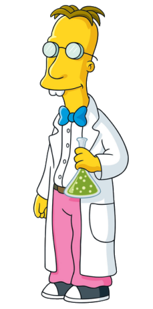
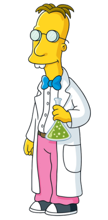
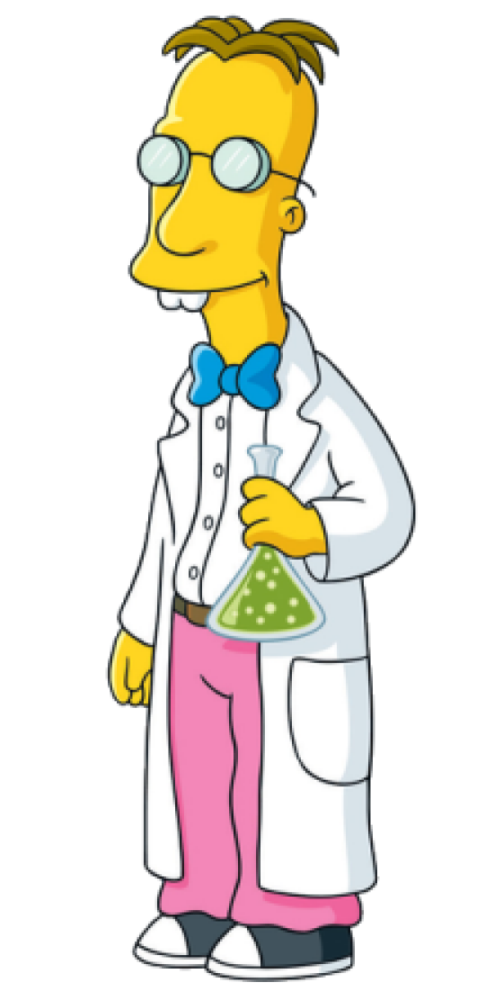
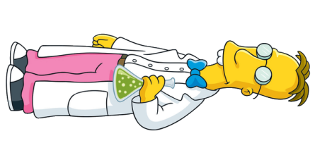

Kod
#" fig-cap: Frink w oryginalnym rozmiarze
library(magick)
frink <- image_read("https://jeroen.github.io/images/frink.png")
frink
Obrazy cyfrowe mogą zostać poddane różnego rodzaju transformacjom. Oto kilka najważniejszych z nich:
Skalowanie: zmiana rozmiaru obrazu;
Obracanie: obrót obrazu o określony kąt;
Przesunięcie: przesunięcie obrazu w kierunku ustalonego wektora;
Progowanie: przekształcenie obrazu binarnego, gdzie piksele o wartościach powyżej określonego progu są przekształcane na białe, a pozostałe na czarne;
Kompresja: zmniejszanie rozmiaru pliku obrazu poprzez redukcję jego jakości;
Filtrowanie: zastosowanie filtrów, takich jak filtr Gaussa, filtr medianowy, filtr laplasjan itp.
Skalowanie obrazu to proces zmiany rozmiaru obrazu. Może to być zwiększenie lub zmniejszenie wielkości obrazu. Skalowanie może być wykonywane przy użyciu różnych algorytmów, takich jak skalowanie proporcjonalne, skalowanie nieproporcjonalne, skalowanie bilinearne, skalowanie bicubiczne itp. Skalowanie proporcjonalne zachowuje proporcje pikseli i jakość obrazu, natomiast skalowanie nieproporcjonalne nie zachowuje proporcji i może prowadzić do zniekształceń obrazu. Skalowanie bilinearne i bicubiczne są bardziej zaawansowanymi metodami skalowania, które pozwalają na uzyskanie lepszej jakości obrazu po skalowaniu.
Skalowanie bilinearne to metoda skalowania obrazu, która polega na interpolacji między pikselami. W tym procesie, dla każdego nowego piksela wynikowego obrazu, algorytm oblicza wartość piksela poprzez interpolację między czterema najbliższymi pikselami z oryginalnego obrazu. Konkretniej, dla każdego nowego piksela, algorytm określa współrzędne na oryginalnym obrazie, i następnie interpoluje wartości pikseli z czterech najbliższych sąsiednich pikseli w oryginalnym obrazie. Interpolacja ta jest wykonywana przez przemnożenie każdej z wartości pikseli przez odpowiedni współczynnik interpolacji i następnie sumowanie ich. W ten sposób, skalowanie bilinearne pozwala na uzyskanie obrazu o wyższej jakości niż skalowanie prostopadłe, ponieważ interpoluje wartości pikseli między pikselami oryginalnego obrazu, zamiast przydzielać nowym pikselom wartości pikseli z oryginalnego obrazu.
Skalowanie bicubiczne jest bardziej zaawansowaną metodą skalowania obrazów niż skalowanie bilinearne. Podobnie jak skalowanie bilinearne, skalowanie bicubiczne również polega na interpolacji między pikselami, jednak jest bardziej złożone i dokładniejsze. W skalowaniu bicubicznym, dla każdego nowego piksela, algorytm określa współrzędne na oryginalnym obrazie, a następnie interpoluje wartości pikseli z szesnastu najbliższych sąsiednich pikseli w oryginalnym obrazie, zamiast czterech jak w skalowaniu bilinearnym. Interpolacja ta jest wykonywana za pomocą funkcji bicubicznej, która jest bardziej złożona niż funkcja liniowa używana w skalowaniu bilinearnym. Wartość każdego nowego piksela jest obliczana przez wielokrotne mnożenie wartości pikseli z oryginalnego obrazu przez odpowiednie współczynniki interpolacji i sumowanie ich. Dzięki zastosowaniu bardziej złożonej funkcji interpolacji i większej liczby pikseli z oryginalnego obrazu, skalowanie bicubiczne pozwala na uzyskanie jeszcze lepszej jakości obrazu po skalowaniu, niż skalowanie bilinearne.
Obrót obrazu polega na przekształceniu obrazu przez obrócenie go o określony kąt względem pewnego punktu, zwykle środka obrazu. Ten proces polega na transformacji współrzędnych pikseli na obrazie i może być wykonywany za pomocą różnych algorytmów. Jednym z najczęściej stosowanych algorytmów jest algorytm obrotu o kąt \(\theta\), który polega na przekształceniu każdego piksela \((x, y)\) na \((x', y')\) za pomocą następujących równań:
\[ \begin{align} x' &= x \cos(\theta) - y \sin(\theta)\\ y' &= x \sin(\theta) + y \cos(\theta), \end{align} \]
gdzie \(\theta\) jest kątem obrotu w radianach.
Jeśli obraz jest skalowany podczas obrotu, to mogą pojawić się brakujące lub zbędne piksele w obrazie wynikowym, w związku z tym trzeba zastosować odpowiednie metody interpolacji takie jak skalowanie bilinearne czy bicubiczne.
Obrót obrazu jest przydatny w wielu aplikacjach, takich jak analiza obrazów, przetwarzanie obrazów i uczenie maszynowe, ponieważ pozwala na zmianę orientacji obrazu, co może być konieczne do prawidłowego przetwarzania i analizy.
Przesunięcie obrazu o wektor to proces przemieszczenia obrazu o określoną odległość w pionie i/lub poziomie. W tym procesie, każdy piksel w obrazie jest przesunięty o taki sam wektor \((dx, dy)\) w pionie i poziomie. Wektor przesunięcia może być dodatni lub ujemny, co oznacza przesunięcie obrazu w górę lub w dół oraz w lewo lub w prawo. Przesunięcie obrazu o wektor może być wykonywane za pomocą różnych algorytmów, ale jednym z najprostszych jest przekształcenie każdego piksela \((x, y)\) na \((x+dx, y+dy)\).
Jeśli przesunięcie prowadzi do utraty części obrazu, to trzeba zastosować odpowiednie metody interpolacji, takie jak skalowanie bilinearne lub bicubiczne, aby uzupełnić brakujące piksele. Przesunięcia są również ważne w kontekście uczenia maszynowego.
Przekształcenie afiniczne (afiniczne transformacje obrazów) to rodzaj przekształcenia obrazu, które polega na zmianie rozmiaru, kształtu i położenia obrazu za pomocą macierzy afinicznej. Macierz afiniczna jest to macierz 3x3, która zawiera informacje o skali, obrocie, translacji i odkształceniu obrazu.
Przekształcenie afiniczne pozwala na wykonywanie operacji takich jak:
Przekształcenie afiniczne jest często używane w przetwarzaniu obrazów do uzyskania lepszego dopasowania obrazów do siebie, np. w celu wykonania mapowania międzyobrazowego lub w celu korygowania perspektywy obrazów.
Progowanie obrazu polega na zmianie poziomów jasności pikseli w obrazie na podstawie określonego progu. Próg jest wartością graniczną, po której piksele o niższej jasności są zmieniane na czarne, a piksele o jasności powyżej progu są zmieniane na białe. W ten sposób obraz jest konwertowany na obraz czarno-biały, co może ułatwić dalsze operacje na nim, takie jak analiza obrazu.
Filtracja obrazów to proces przetwarzania obrazów polegający na przepuszczeniu obrazu przez filtr, który modyfikuje wartości pikseli. Cel filtracji może być różny, np. usunięcie szumów, wzmocnienie krawędzi, rozmycie obrazu.
Istnieje wiele różnych rodzajów filtrów. Na przykład:
Filtracja jest ważnym krokiem w przetwarzaniu obrazów, ponieważ pozwala na usunięcie niepożądanych cech obrazu lub wzmocnienie istotnych cech obrazu, co ułatwia dalsze analizy.

Translacja (przesunięcie) i rotacja nie zmieniają rozmiarów i orientacji obrazu, natomiast skalowanie zmienia rozmiar obrazu ale zachowuje orientację i kąty. Przekształcenia afiniczne zachowują jedynie równoległość par prostych. Projekcje są przekształceniami polegającymi na zmianie perspektywy patrzenia na obraz dlatego jedyną własnością, która jest zachowana w transformowanym obrazie to linie proste.
#" fig-cap: Frink w oryginalnym rozmiarze
library(magick)
frink <- image_read("https://jeroen.github.io/images/frink.png")
frink
image_scale(frink, "250%x250%")
image_scale(frink, "300x100!")image_rotate(frink, 90)